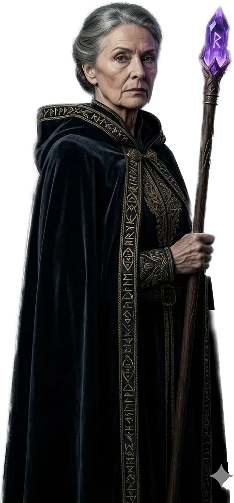
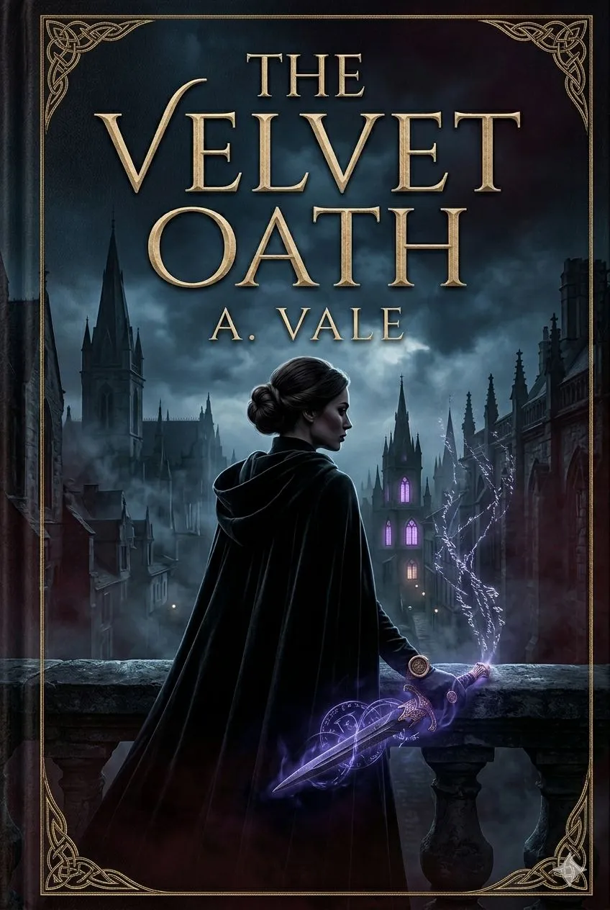
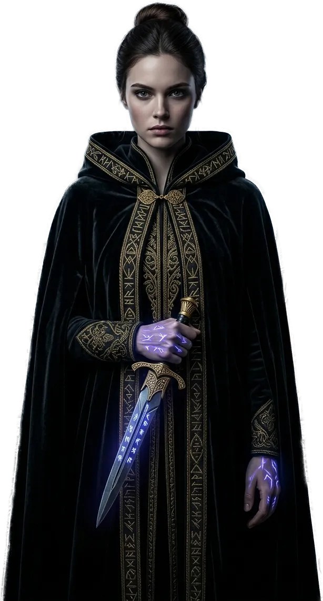

A masterful fantasy debut
The Velvet Oath
Words carry the weight of blood. In a realm where oaths are carved straight into the skin, a young rune scribe must choose between betraying her order and letting the city she loves go dark.

"Some swear to promise. Others swear to bind."
About the book
A gothic fantasy about the price of a spoken vow.
In Aravell, a city of towers and velvet, there is no oath without a cost. Rune scribes carve them directly into the body, and every broken promise tears at its bearer from within. Elara of the Second Circle is one of the most gifted scribes of her generation. Until she breaks one of her vows.
When rune daggers begin vanishing from the palace and the citizens' nightmares start walking the streets, Elara discovers that someone long dead bound the city itself with a velvet oath and has come to collect the debt. To save what she loves, she must break the final law of her order and carve into her skin a vow with no return.
The Velvet Oath is the first volume of the Aravell Saga, a slow-burning dark fantasy about honor, magic written into flesh, and how much can be sacrificed for a single word once spoken.
Main characters
Three oaths. Three fates.
No rune scribe serves only themselves. Each carries someone else's obligation, and each is trying to break free of it in their own way.

The world
Aravell — a kingdom of velvet and runes.
A realm where laws are not written on parchment, but into the skin of those who speak them. Mist, gothic spires, amethyst light.
I
Aravell, the Velvet City
Capital city
Basalt towers and twilight cathedrals where ribbons of cold mist gather in the streets. The center of rune magic and rune corruption alike.
II
The Second Circle
Scribes' order
A monastery suspended above an abyss where apprentices learn how to write oaths into skin and survive what it means to break them.
III
Crowshore
Borderlands
Marshes and pillars of forgotten temples where the banished go when the realm decides to strip them of their runes. A land of second chances. And final ones.
Book excerpt
Open the codex.
Six pages from the opening chapters. Turn through them as if the book were already in your hands.
Before the first word
Foreword
Every oath is a door. Some open inward, some outward, and very few can ever be shut again.
When I first laid a pen against my own skin at seventeen, I knew I would never again be alone. The words you write into yourself stay awake even while you sleep.
This is a memory. Or a confession. Most likely both.
— i —
Chapter One
The night the balcony trembled
I swallowed the whole thing at midnight so it could not come true before morning. The taste of parchment clung to the roof of my mouth for an hour afterward, bitter but not unpleasant. It reminded me that oaths have flavor. That they can be swallowed.
The fog was so thick that night the balcony stone itself seemed to shake inside it. Or perhaps the stone shook and I merely blamed the mist. In Aravell the difference between being alone and being alone without a witness matters.
"Elara." The voice came from behind me, but I heard it from the inside.
— 1 —
I turned more slowly than was safe. Mistress Mira stood in the doorway, her velvet cloak knotted over her right shoulder and the Veyra staff leaning against the threshold as though it already knew force would not be needed.
"You were meant to come an hour ago," she said. It was a statement, not a rebuke. "The circle is waiting."
I swallowed the rest of the words that were already beyond saving. The parchment sat in my stomach like a stone. Somewhere beneath my ribs, where every scribe bears their first rune, a sharp heat began to build.
Mira saw it. Mira sees everything. "What did you do?"
— 2 —
Chapter One · continued
"I promised," I breathed, "that I would never write on myself again."
It was the first confession of the evening. The second I did not need to speak aloud. Mira's gaze dropped to the inside of my left forearm, where a fresh line was still tightening across the skin. Thin. Violet. Barely dry. Your own handwriting never fully stops trembling.
"And what did you write?"
That was where I hesitated. Some runes cannot be spoken until the blood on them has dried. Mira knew that. Mira knew it better than anyone.
— 3 —
She set the staff against the wall with careful thought. The amethyst at its crown sparked, a short irritated flash of violet light, the kind light gives off when it senses a lie no one has spoken yet.
"Elara," the high mistress said quietly, and suddenly she was not my mistress but the woman who had carried me into the Second Circle twelve years ago wrapped in someone else's blanket. "Tell me which oath you broke in order to write this one."
I closed my eyes. Behind my eyelids a faint violet line came alive, my own rune, still fresh and still hungry. I could feel it turning toward me. As if it had been waiting.
"The one about you, mistress," I answered. "The one you wrote into me yourself."
— 4 —
Chapter Two
What vanished from the palace
Kael came in the morning. He came in the manner of people who have learned not to be heard, which in his case meant that somewhere between the stairs and my chamber he had managed to unsettle two guards and one cellar boar.
"A blade vanished from the palace," he said instead of greeting me.
"Which one?"
"The third."
I sat down. The third rune dagger of Aravell has been kept in the palace since times no one remembers. It is said to have a name, but that no one has spoken it aloud in two hundred years, because whoever did would never be able to move from the place where they stood.
— 5 —
"Who took it?" I asked.
Kael drew back his sleeve. A dark violet inscription wound across his forearm, one I did not read. No scribe of my circles would have recognized that hand. It was old script. Too old.
"I will tell you," he said, "but only if you are willing to break one more oath."
Outside the window, morning spread over the rooftops of Aravell in a gray so complete it looked untrustworthy. In the distance, the bell tower of the Second Circle rang three times. Then silence. Then a fourth strike that had no right to exist.
— 6 —
End of excerpt
The story continues. The Velvet Oath is waiting to be opened.
"Silence is the hardest oath. It holds you even when you stand alone."
— 7 —
The Velvet Oath
Thank you for reading the excerpt.
ᚠ ᚱ ᚦ
1 / 5
Turn pages by tapping · with the ← → keys · or by swiping
Reviews
What readers are saying.
From critics, booksellers, and readers who swore they would read only one chapter.
★ ★ ★ ★ ★
"Slow, beautiful, and ominous. Vale writes as if the oath in the book hurts her too. Aravell is a city you want to return to long after the final page."Tereza HolanováLiterární noviny
★ ★ ★ ★ ★
"If you love the quiet breath of dark fantasy in the vein of R. F. Kuang or Susanna Clarke, this novel will get under your skin, quite literally."iLiteratura.czReview of the month
★ ★ ★ ★ ★
"Magic written into flesh feels so tangible you start checking your own wrist after every chapter. A masterful debut."Adam NovákKnihovod podcast
★ ★ ★ ★ ★
"Elara of the Second Circle is one of the best-written heroines of the year. She never swears lightly. And she never forgets."Knižní moľBlog of the year 2026
★ ★ ★ ★ ☆
"It burns slowly, but that is its strength. Vale builds atmosphere like a cathedral: patiently, carefully, and more magnificently with every chapter."Reader & Co.Monthly
★ ★ ★ ★ ★
"At last, a Czech fantasy novel that does not set out merely to entertain. It sets out to stay. And it does."Magdaléna BartošHost magazine
Buy
Choose your edition.
Three everyday editions for constant reading — and one made to be handed down.
Paperback
A classic paperback edition in a standard format. Built for everyday reading.
- 512 pages
- Illustrated flaps
- Matte finish
€15.90
Add to cart →Hardcover
A hardback edition with a cloth spine and silver rune stamping on the boards.
- Sewn binding
- Silver foil stamping
- Ribbon bookmark
€23.90
Add to cart →E-book
DRM-free EPUB and MOBI files for reading anywhere. Bonus: an interactive map of Aravell.
- EPUB · MOBI · PDF
- Interactive map
- No DRM
€9.90
Download now →Collector's edition
A numbered run of 666 copies. Velvet casing, a hand-embroidered rune, and the author's signature.
- Velvet binding
- Embroidered rune
- Signed by A. Vale
- Map of Aravell
€79.00
Reserve →